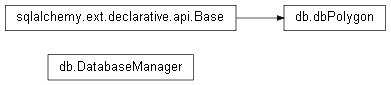

Internally manages the database engine and any sql related objects. Hands out sessions with getSession() but only offers abstractions for other functionality. The database is INDEPENDENT from the application
Takes a list of polygons and commits them into the database, used in polygonList to commit all visible polygons :param polyList: the current polygonList corresponding to the active plot :param time: time of the JSON’s creation :param f: file name
Get a session and delete the object from the database. :param indx: the primary key for the object passed
Encode and write out a JSON object :param filename: name of the file :param data: Python dictionary representation of a JSON
Sqlalchemy class object, contains all data that is stored inside the database
Internally manages the database engine and any sql related objects. Hands out sessions with getSession() but only offers abstractions for other functionality. The database is INDEPENDENT from the application